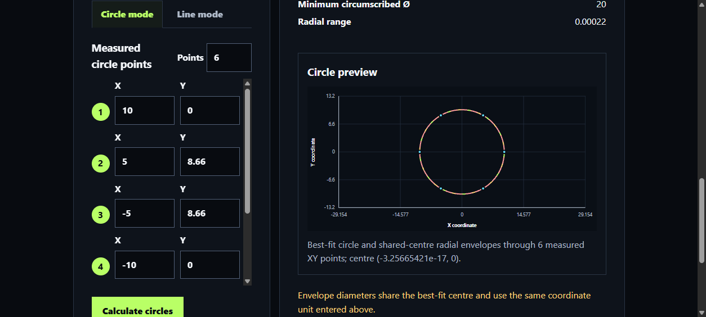
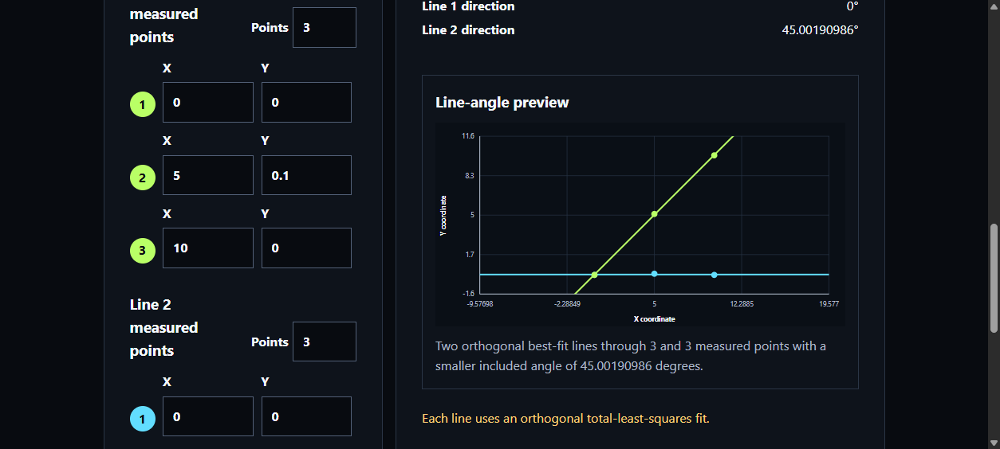
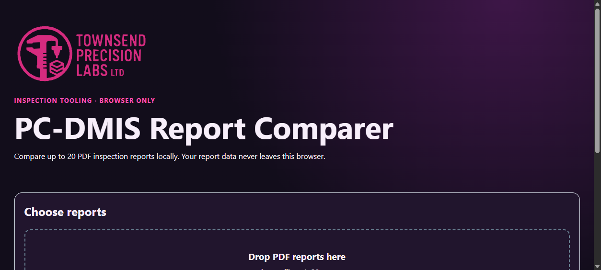
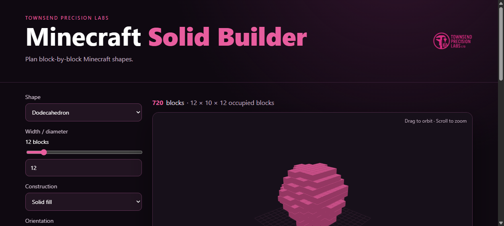

Tool Deck overhaul, project progress, and company updates
Before getting into the new tools, a slightly miserable update: my bag was stolen in Barcelona. I lost everything in it, including the custom Legion Go laptop I had only just finished writing about. Sad times indeed.
That is also why I’m talking about needing another powerful machine later in this post. I wasn’t planning to replace quite so much equipment at once, but here we are.
Tool Deck overhaul
I’ve added quite a lot to Tool Deck recently. Some of it is genuinely useful engineering software, some of it solves annoyingly repetitive inspection jobs, and one of the tools is very obviously for Minecraft. Balance is important.
Also, I’m tired of calling Hermes “Hermes” every time I mention him on here. His name is Mike, he’s extremely useful, and that is what I’m calling him from now on.
TIA Portal project conversion
College uses TIA Portal V19. I only had V18 and didn’t particularly fancy paying to upgrade, especially when Siemens moved on again not long afterwards.
I manually recreated the college project in V18 so I could work on the assignment on my own computer. That is much better for me because I get more time to practise, but I kept thinking the project files surely could not be that different between versions. If I wasn’t using any newer features, perhaps the project could be exported or converted backwards somehow. PC-DMIS lets you select an older target version and, within the supported limits, it just gets on with it.
I first tried the obvious things: opening the project structure, finding version references and changing them. No luck. The project simply failed to open.
This is where Mike came in. I gave him the job of developing a TIA project converter as a possible addition to Tool Deck. The idea sounded simple: choose a newer TIA Portal project, select an older supported version and export it.
It turns out the version number is the easy bit. A real conversion needs the licensed Siemens applications, version-matched TIA Portal Openness workers, object-by-object compatibility handling and a final compile inside the target version. A browser can safely inspect parts of the project and produce a migration plan, but it cannot honestly claim to rewrite and validate the proprietary project by itself.
The experimental project therefore stops at inspection and planning. It does not pretend to convert the file. To build the tool I actually wanted, I’m going to need the newer software installations for proper testing.
So the whole thing has led me back to exactly what I was trying to avoid. Back to the drawing board with this one.
Coordinate geometry calculator
Open the coordinate geometry calculator
This one came from a much more practical problem. I wanted two simple tools for shadowgraph measurement when you don’t have a fancy touchscreen system doing all of the calculations for you.
I also do not feel like doing trigonometry for every 45-degree chamfer across 20-plus parts. It slows inspection down massively. Radii can be awkward for the same reason. You can compare them with overlays, but that introduces more judgement and more variation. If a tool radius “basically fits”, that may be enough for some jobs, but it is still useful to produce a numerical result with very little extra effort. It becomes much more useful when the radius actually has a strict inspection requirement.
The calculator has two modes: circles and lines.
For a circle, choose how many points you measured, enter the XY coordinates and calculate. It reports the best-fit diameter, a shared-centre maximum-inscribed diameter, a shared-centre minimum-circumscribed diameter and the radial range. It also draws the result so obvious input mistakes are easier to spot.

For an angle, choose the number of measured points on each line and enter both point sets. Two points per line will produce a result, but three or more gives the best-fit calculation something more useful to work with and should give a more repeatable result when the measured edge is not perfect.

The calculation runs entirely in the browser. As always, it is an aid rather than a substitute for a suitable measurement method, known uncertainty and checking that the coordinates were entered correctly.
PC-DMIS Report Comparer
Open the PC-DMIS Report Comparer
This one is pure laziness, but AI and automation are ideal for monotonous jobs while I get on with writing CMM programs.
A lot of existing production programs are run in small batches or as one-offs and produce a PDF report. Those values then need to be copied into an in-house form, and the form changes depending on the job. Most of the time that means copying results across one value at a time. Before anyone shouts “Excel reporting!” at me, I know. I’ll get to that another day, because that has its own collection of problems.
The PDF reports are clean and the numbers are rendered at high resolution, so the numerical OCR works very well. The labels are a different story. Feature names, axis labels and symbols can come out looking completely mangled.
That is not a deal-breaker. The tool can process up to 20 reports locally in the browser, align the dimensions and place them into an interactive comparison table. You can inspect the readings, see the spread and quickly spot rows that need attention. Labels can be renamed before export. Renaming 20 labels is still much better than manually copying hundreds of values.

The current OCR and parsing pipeline is deliberately general-purpose. I eventually want to replace parts of it with a model trained specifically around PC-DMIS report layouts and labels, but that needs a meaningful and varied training set before it would be responsible to deploy. For now, always compare the output with the source reports and pay particular attention to anything marked CHECK DATA.
Purely because I could, I also added capability calculations and charts. They give a quick visual indication of spread against the specification limits. They do not prove that the process is stable or in statistical control, and the result still depends on sample size, measurement uncertainty and whether the data is suitable for a capability calculation in the first place. Use them as a prompt to investigate, not as an automatic acceptance decision.
Minecraft Solid Builder
Okay, you caught me. It’s Minecraft.
I’ve had one world going for years, and trying to build complicated 3D geometry out of cubes is a massive pain in the arse. This tool lets you select a shape, choose the size and construction style, preview it in 3D and then work through it layer by layer. It can also export the build guide.

It now covers the Platonic solids plus spheres, domes, cylinders, cones and toruses, with solid, hollow and wireframe modes. The main reason I wanted it was to build a massive dodecahedron, and it is going to save me a ridiculous amount of time.
Simple, but effective. I’m happy with it, so it’s getting shared regardless.
Company and project updates
Gear Generator 3
I want to give a quick shout-out to Abel, the creator of Gear Generator 3.
I bought the permanent Pro licence because I did not want to pay per export. The home-brewed CMM needs custom gear-drive systems, and that means a lot of R&D and test pieces. Reducing the time spent drawing gears manually is a huge advantage.
I have already had my money’s worth just from being able to visualise complete custom drive systems before committing to parts. Nothing complicated to add here. It is a genuinely useful tool and I would recommend it.
Home-brewed CMM
There has been a lot of progress on the home-brewed CMM. I’ve started designing the X, Y and Z drive systems, beginning with a dual-driven Y axis so I can control gantry racking.
I’m using spare parts where possible, including the 4032 stepper motors I already have. At the moment I’m designing a fixture to hold the gears in the correct positions so I can start testing the drive resolution. The linear scales will remain the measurement truth; the drive resolution and mechanics determine how finely and repeatably I can position the machine without fighting backlash, compliance or racking.
There is a lot of testing still to do. Once I have the drive system assembled and something more interesting than loose parts to photograph, I’ll put up a proper update.
The next problem is the probe trigger itself. My current idea is a flexure plate with strain gauges arranged to detect lateral and axial loading, including a separate response for a downward hit. This is new territory for me, so the first version is going to be experimental.
I need to model the flexure strength and strain properly, then get a few metal samples laser cut. I already have one design, but it makes sense to try two or three geometries in the first batch because I currently have no idea which one will behave best. Much better to admit that now than pretend version one will be perfect.
PC-DMIS Dimension Extractor
View the PC-DMIS Dimension Extractor on GitHub
This one is major for me. I’m not sure how many other people have had problems with the PC-DMIS print command, but I have seen plenty of installations where it works perfectly with a fixed path and then refuses to behave when a loop feeds it variables. Reinstalling the PC-DMIS print driver does not always solve it.
I could contact Hexagon, but from my experience the failure can depend on the Windows installation and other software on the machine. It is a massive pain to diagnose. The legacy Excel report command can be just as awkward.
Eventually I had a better idea. All of the evaluated dimensional data is already inside PC-DMIS, and the script runs before the end of each loop iteration. Instead of fighting the print path, the extractor loops through the available dimensional results and creates a clean report containing the nominal, limits, measured value, deviation and status information exposed by PC-DMIS.
The current package creates an Excel workbook, a matching CSV and an export evidence log. It uses five PC-DMIS variables:
EXPORT_PATH— the folder where reports should be saved;FILE_PREFIX— the part, drawing or routine prefix;WORKS_ORDER— the works order or batch number, used in the output name;SERIAL— the first serial number in the run;LOOPCOUNT— set to 1 before the loop and incremented after each report.
The current serial is calculated as SERIAL + LOOPCOUNT - 1, so it works regardless of the serial number the batch starts from.
It has been validated against PC-DMIS 2026.1 with legacy dimensions and standalone ISO size commands. New geometric-tolerance commands still need representative validation routines, so I’m not claiming complete support for every command PC-DMIS can produce. The reports also still need reviewing before they become controlled inspection evidence.
New equipment
Laser scanner
I’m planning to buy a laser scanner for the company. I want to use it for reverse engineering and new product development, but it would also let me visit a customer’s site and capture parts there rather than requiring everything to come back with me.
The two main options I’m comparing are the Creality CR-Scan Raptor and the Revopoint MetroY range. Both manufacturers publish very good headline accuracy figures, but those numbers are not always stated under identical test conditions, so I need to compare the same type of accuracy, scan volume, surface preparation and working distance rather than choosing whichever page has the smallest micron number.
The Revopoint calibration workflow and accessories are appealing. I could also buy a suitable calibrated artefact separately for verification if I chose the Creality. Having an artefact calibrated with UKAS-traceable results would give me a traceable reference for checking the scanner; it would not magically make every scan or the complete system “UKAS calibrated”, so the verification method and uncertainty would still need proper thought.
I have also been given a year of access to JetCAD, which should be useful for converting and repairing scan data, so I want to make proper use of that while I have it.
I have about two months to decide. There is no need to rush this purchase. I need to watch more real-world tests, compare the complete workflows and choose the right scanner for the business rather than the one with the nicest advert.
PC upgrade
The scanner work also means the desktop is going to need an upgrade. The Radeon RX 6900 XT has 16 GB of VRAM, so I do not need to replace the GPU, and storage is definitely not a problem.
I found a CCL motherboard bundle built around the Ryzen 7 9800X3D with a motherboard and 64 GB of RAM for roughly £1,500 at the time of writing. That should give me enough CPU and system memory for much heavier scan data without replacing the parts that are already perfectly capable.
Boring but necessary equipment
I’ve finally burned through the 10 kg of ABS, at a slightly alarming rate thanks to constant prototyping and testing. I need more of that, plus a decent amount of IPA for the resin printer so I can start manufacturing stock components ready for professional photographs and proper advertising.
There are a few other less exciting purchases on the list: a document scanner, a Dremel and the usual collection of workshop bits that never feels important until you need one of them immediately.
Overall, the company is in a good position to start the R&D work I actually want to do while keeping enough normal work moving to pay the bills. There is a lot going on, but for once it feels like the different projects are starting to connect rather than just competing for time.